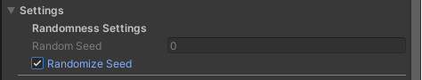
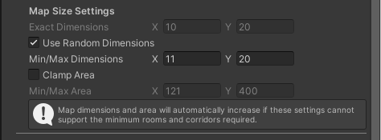
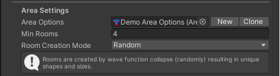
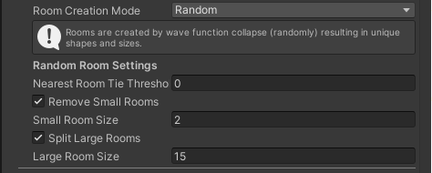
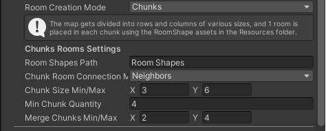
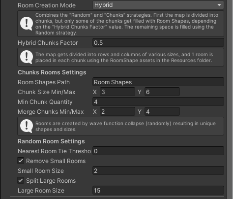
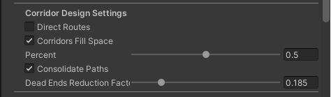
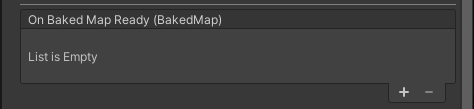

Settings
Randomness Settings

Random Seed
The random generation uses this number to "seed" the system. Using a specific seed number will always generate the same map layout with the same settings.
Randomize Seed
When checked on, this overrides the Random Seed by randomly selecting a new seed each time GenerateMap() is called. This ensures different maps are created each time.
Map Size Settings

Exact Dimensions
Specify the X and Z dimensions of the map in tiles (not Unity units). This includes an exterior boundary of wall tiles so that no corridor leads outside of the map. Example: If you want a 15x15 playable area, you should set this to 16x16 to account for the outer walls.
Use Random Dimensions
When checked on, the Exact Dimensions will not be used. Instead, the Random Dimensions Min/Max values will be used to randomly select a map size.
Min/Max Dimensions
When "Use Random Dimensions" is checked on, the X value is the smallest possible size of one side of the map, and the Y value is the largest possible size of one side of the map. Example: If you set X to 10 and Y to 15, your map could be anywhere from 10x10 to 15x15, such as 11x14.
Clamp Area
When enabled, allows you to specify a min/max total playable area (in tiles) for randomly sized maps. This gives you fine control over the total map area independent of dimensions.
Min/Max Area
When "Clamp Area" is enabled, these values define the minimum and maximum total number of playable tiles. The system will only generate maps within this area range.
Ceiling Options

Use Exterior Ceiling
When checked on, a ceiling module will be spawned outside of the rooms and corridors, which will be visible by any cameras above the map. This setting is ideal for top-down or third-person views.
Use Interior Ceiling
When checked on, a ceiling module will be spawned inside the rooms and corridors, which will be visible from inside the map (by any cameras below the ceiling). This setting is ideal for FPS/first-person views.
Area Settings

Area Options
This is where you specify which asset to use to apply the look or "skin" of the map. This determines which Area Definitions are assigned to rooms and corridors but has no effect on where room and corridor tiles are placed.
Min Rooms
The minimum number of rooms required. A map will always have at least enough to support all of the required rooms dictated by the Area Options asset, and the Min Rooms, whichever is greater.
Room Creation Mode
This determines what method is used to generate the rooms.
Random
This mode uses WFC to randomly place tiles, and some post-processing to fine-tune and clean-up the final layout. Rooms will be all sorts of shapes and sizes.
Chunks
This mode divides the map into a grid of "chunks" and places specific room shapes that you define using Room Shape ScriptableObject assets. See Room Shapes for more info.
Hybrid
This mode combines both Random and Chunks modes with the Hybrid Chunks Factor setting determining the bias towards each mode.
Random Room Settings
 These settings only apply when using the Random or Hybrid Room Creation Modes.
Nearest Room Tie Threshold
During map generation, when pathfinding for connecting all rooms, a path will try to reach from one room to a nearby neighboring room. This setting determines what is considered tied for "nearest room."
- If this is set to 0, then the actual closest room will be used to continue the path.
- If this is set to 2, for example, then a room that is 3 spaces away will be considered tied with a room that is only 1 space away for determining which room to connect the path to next. This adds variation to corridor layouts by allowing connections to rooms that aren't strictly the closest.
Remove Small Rooms
If this is checked on, rooms that are made up of a number of tiles equal to or less than the "Small Room Size" will be removed.
Small Room Size
The tile count at which a room is considered to be "Small." Only used if "Remove Small Rooms" is enabled. Example: If set to 2, rooms that are only 1 or 2 tiles in size will be removed.
Split Large Rooms
If this is checked on, rooms that are made up of a number of tiles equal to or greater than the "Large Room Size" will be split as many times as it takes to retain as much of the room area as possible without any of the remaining rooms being larger than the "Large Room Size" minus one.
Note
Large Room splitting happens before removal of small rooms, so if a split results in a small room, that room will be removed.
Large Room Size
The tile count at which a room is considered to be "Large." Only used if "Split Large Rooms" is enabled. Example: If set to 15, rooms that are made of at least 15 tiles will be split into 2 rooms. If any of the resulting rooms are still considered to be "Large," they will be split.
Chunk Room Settings
 These settings only apply when using the Chunks or Hybrid Room Creation Modes. (Chunk Room Connection Mode is not used in Hybrid mode.) This mode divides the map into a grid (rows and columns) of “chunks” of various widths and lengths. Each chunk is then assigned a room shape that fits within the dimensions of the chunk.
Chunk Room Connection Mode
This determines the method used for connecting rooms with corridors during map generation.
Neighbors
Rooms will be connected to neighboring rooms based on their orthogonal neighbors in the chunks grid.
Proximity
Rooms will be connected based on their shape (not the chunk shape) and proximity to other rooms. This is the same way the Random Room Creation Mode connects rooms.
Chunk Size Min/Max
This determines how small or how large a row or column division can be when making the chunks grid. Example: If this is set to (3, 6) and the map is 12 tiles wide, then the map will be divided into as many as 4 columns of 3 tiles each, or as few as 2 columns of 6 tiles each. The same logic applies to the number of rows.
Min Chunk Quantity
When this is set to anything other than 0, the map size will be increased if necessary to ensure there are enough chunks to support this number of rooms. Similarly, the Area Options asset's "Required" rooms will determine the minimum number of chunks created.
Merge Chunks Min/Max
After dividing the map into chunks, but before placing rooms in them, some of the chunks can be merged into larger chunks. This value determines how many merges should be performed. Example: Set to (0, 0) if you don't want any merges. Set to (2, 4) to randomly merge between 2 and 4 chunk pairs.
Hybrid Room Settings
 This mode exposes all of the relevant settings of both the Random and Chunks room modes, as well as the following:
Hybrid Chunks Factor
Only applies when using Hybrid Room Creation Mode. This multiplier determines how many chunks are used to place a room by Room Shape versus random generation.
- A value of 0.5 means half of the chunks will use a Room Shape, and half will use random generation
- A value of 1.0 means all chunks will use Room Shapes (equivalent to Chunks mode)
Corridor Design Settings

Direct Routes
When pathfinding to place corridors between rooms, if this is checked on, the shortest most direct route will be taken. If off, paths might go around rooms before connecting, creating more interesting corridor layouts.
Corridors Fill Space
When off, only as many corridors as necessary to connect all rooms to each other will be created. If this is on, the empty areas between rooms and corridors will also be filled with more corridors, resulting in some dead-end corridors. This setting is affected by the “Percent” defined below.
Percent
Determines what percentage of empty tiles should become corridors in addition to the ones required to connect the rooms.
- 0 is the same as unchecking “Corridors Fill Space”
- 1 means 100% will be filled.
Note
Sometimes, due to tile placement rules, some areas will have to remain empty even at 100%.
Consolidate Paths
When pathfinding to connect rooms:
- If off, other already existing paths will be ignored even if they already connect to the desired destination.
- If on, when trying to connect two rooms, if a path is found between them that already exists, then pathfinding stops. This generally results in neater-looking maps with less corridor redundancy.
Dead Ends Reduction Factor
Controls the ratio of dead-end corridors to connect or remove.
- A value of 0 will not remove any dead-ends.
- A value of 1 will remove all of them. Dead-ends will be removed by connecting them to adjacent rooms or corridors if possible. Otherwise, they will be shortened until they are connected or removed completely.
Door Placement Settings

Door Placement Mode
Doors are placed at entrances to rooms where they connect with corridors.
Whole Door
The "Whole Door" prefabs defined in your Tile Module Definitions assets will be used. These should include both the frame and the opening/animating panel(s).
Half Frames
The "Half Door Frames" and "Half Door Panels" prefabs defined in your Tile Module Definitions assets will be used. This setting allows each side of the door to match the style of the corridor or room, creating asymmetric doorways.
Unity Events

On Baked Map Ready (BakedMap)
Called at runtime when the BakedMap is ready to use. Passes the BakedMap object.